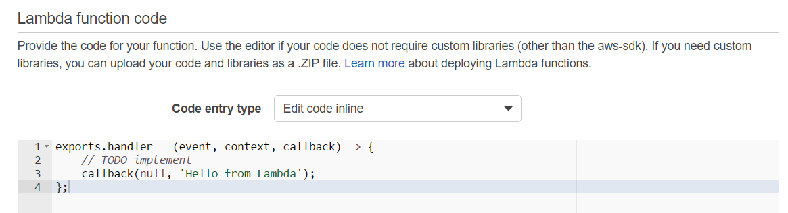
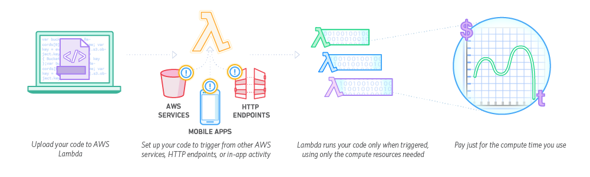
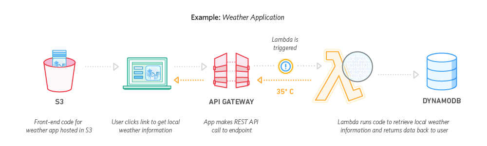
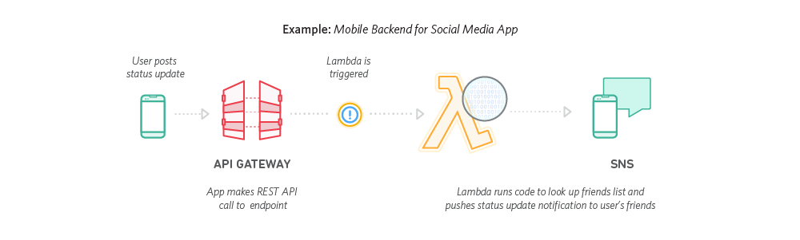
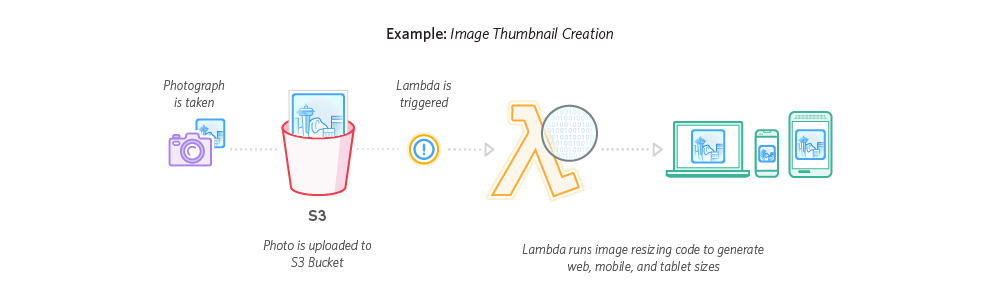
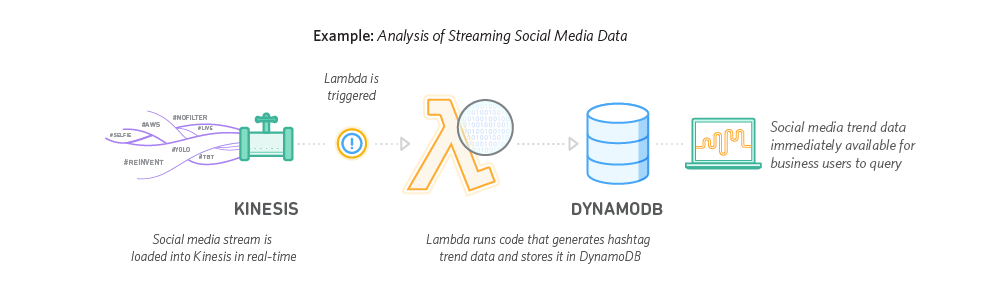
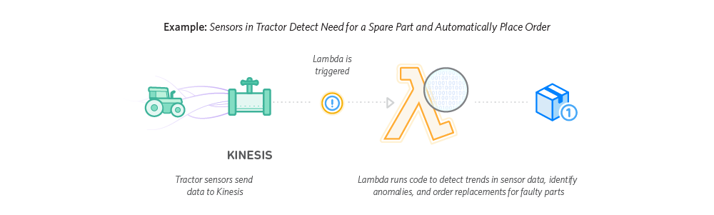
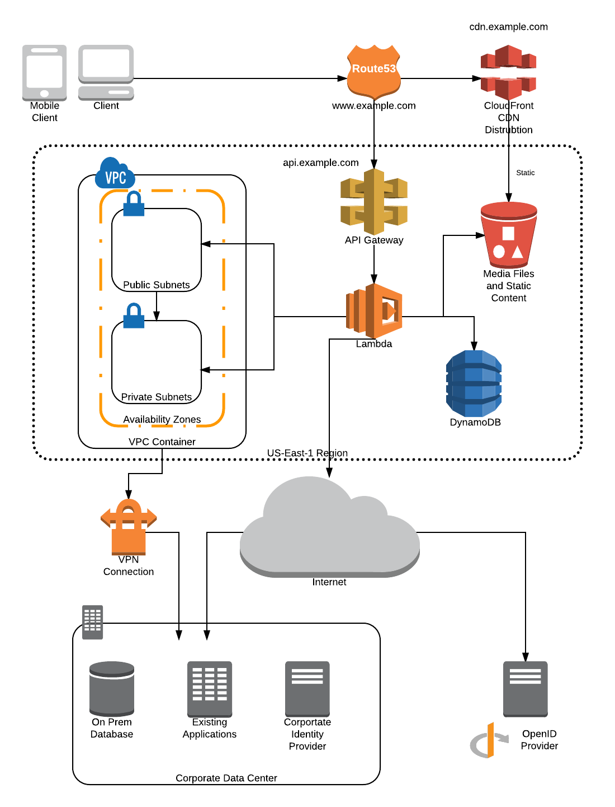
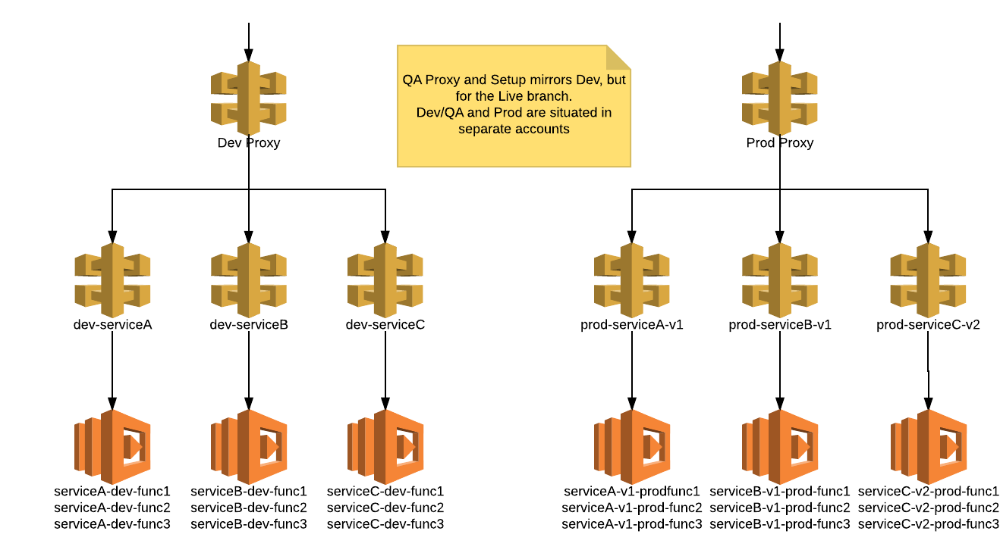
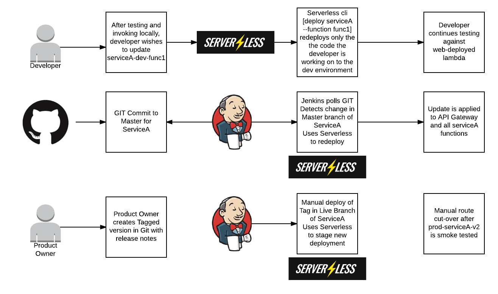

Serverless Compute
Building full stack websites with minimal infrastructure
Created by Scott Hankinson / Slalom Consulting
What is Serverless?
“Serverless computing, also known as function as a service (FaaS), is a cloud computing code execution model in which the cloud provider fully manages starting and stopping of a function's container platform as a service (PaaS) as necessary to serve requests, and requests are billed by an abstract measure of the resources required to satisfy the request, rather than per virtual machine, per hour.”
“Despite the name, it does not actually involve running code without servers. The name "serverless computing" is used because the business or person that owns the system does not have to purchase, rent or provision servers or virtual machines for the back-end code to run on.”
Miller, Ron (24 Nov 2015). "AWS Lambda Makes Serverless Applications A Reality"
Who are the providers?
AWS is regarded as the first major cloud provider to offer Serverless Functions, debuting AWS Lambda at re:Invent in 2014. IBM OpenWhisk and Microsoft Azure Functions became generally available in 2016, and as of this writing Google Cloud Functions have just entered public beta.
What does this presentation cover?
Practical experience and ready to demo code mean that this presentation focuses largely on AWS tooling and components. Many of the concepts may be transferable, but the core lens we will be using is Amazon Web Services
What languages are supported?
 NodeJS and Python support in-line code editing for quick testing, while Java and C# require deployment packages. For any complex function, deployment packages will be a must.
NodeJS 4.3
'use strict';
console.log('Loading function');
exports.handler = (event, context, callback) => {
//console.log('Received event:', JSON.stringify(event, null, 2));
console.log('value1 =', event.key1);
console.log('value2 =', event.key2);
console.log('value3 =', event.key3);
callback(null, event.key1); // Echo back the first key value
//callback('Something went wrong');
};
Python 2.7
from __future__ import print_function
import json
print('Loading function')
def lambda_handler(event, context):
#print("Received event: " + json.dumps(event, indent=2))
print("value1 = " + event['key1'])
print("value2 = " + event['key2'])
print("value3 = " + event['key3'])
return event['key1'] # Echo back the first key value
#raise Exception('Something went wrong')
Java 8
package example;
import com.amazonaws.services.lambda.runtime.Context;
import com.amazonaws.services.lambda.runtime.LambdaLogger;
public class Hello {
public String myHandler(int myCount, Context context) {
LambdaLogger logger = context.getLogger();
logger.log("received : " + myCount);
return String.valueOf(myCount);
}
}
C#
using Amazon.Lambda.Core;
namespace LambdaFunctionExample{
public class Hello {
public string MyHandler(int count, ILambdaContext context) {
var logger = context.Logger;
logger.log("received : " + count);
return count.ToString();
}
}
}
How does it work?
Web Applications
Mobile Backends
ETL

Real-time File Processing
Real-time Stream Processing
IoT Backends
Reference Architecture Time!
Traditional Web Architecture

Serverless Architecture
Organization and Automation
Lambda sounds awesome! What happens when I have something bigger than hello world? How do I manage my-awesome-function across lifecycles? Are there convenient ways of grouping shared functionality?
Organization - Front End
Use a different CloudFront distrubtion for each lifecycle
Create a different bucket for each Lifecycle
Consider storing multiple versions of your application in a staging bucket to allow for blue-green deployments
For continuous integration, automate dropping the right config file for that environment before syncing
Remember, anything in the bucket is publicly accessible -- don't put API keys in here!
Automation - Front End
stage('update environment'){
node {
echo '@@@@ Setting Environment Variables File for DEV @@@@'
sh "rm ./www/assets/json/env.json"
sh "rm ./www/assets/json/env.qa.json"
sh "rm ./www/assets/json/env.prod.json"
sh "mv ./www/assets/json/env.dev.json ./www/assets/json/env.json"
}
}
stage('deploy') {
node {
withCredentials([
string(credentialsId: 'AWS_ACCESS_KEY_ID', variable: 'AWS_ACCESS_KEY_ID'),
string(credentialsId: 'AWS_SECRET_ACCESS_KEY', variable: 'AWS_SECRET_ACCESS_KEY')]) {
sh '''aws s3 sync ./www s3://$BUCKET --delete'''
}
}
}
Organization - Back End
How do you manage routes across multiple API Gateways leveraging multiple groups of Lamba Functions?

Organization - Back End
Serverless Framework provides a way of describing a serverless "application", and then handles generating the CloudFormation to deploy these functions as a unit.
Multiple Serverless Framework applications may then be rolled up under a single API Gateway to generate the public facing API layer.
Group like code with like in the repository, and have Jenkins issue the command 'serverless deploy' to update the code
Organization - Back End
Automation - Back End
Demo
- Route 53 / DNS Configuration
- Front End - CloudFormation and S3
- Back End - Serverless Framework
Caveats
All Web content must be static
We already follow this architectural pattern in may places -- static web content fueled by disconnected backend APIs using OAuth or OpenId.
Angular and Ionic are excellent choices for cross-platform development -- the same site runs on Android, iOS, and web.
Caveats
All APIs should be stateless
Functions should not rely on state stored to memory or disk, and have limited access to the underlying hardware and environment.
Consider using DynamoDB, Redis, or S3 to store stateful information.
Keep your functions lean -- too many items in startup lead to slow bloated functions.
Caveats
Database interactions can become trickier without a REST interface
There are strategies for sharing a connection pool, but you are not guaranteed to be able to re-use containers across invocations. Best effort applies.
For high throughput, a traditional ORM-backed server environment may still be required.
Where possible, consider using DynamoDB or any other data layer with ready to use REST APIs.
Caveats
Environment variables can become tricker without an environment
How do you define an environment variable in S3?
Static config files must be hot-swapped per environment.
Lambda supports container-level environment variables.
Caveats
5 minute execution limit
For long-running processes (file upload/download, ETL, long polling jobs), consider using traditional servers.
For jobs which can be chunked, it is possible to 'save and continue' by doing a slice of work and then recursing.
The default timeout is 3s, and the most cost effective model for execution is quick burst. Any functions which regularly take over a minute may be good candidates for traditional servers.
References
- AWS S3 -- serverless front end of choice
- AWS Lambda -- serverless back end of choice
- AWS API Gateway -- the REST glue to our lambda functions
- Serverless Framework -- deployment specialists
- Reveal.js -- what this presentation was built with